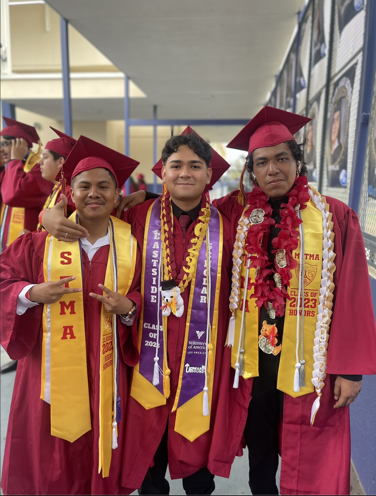
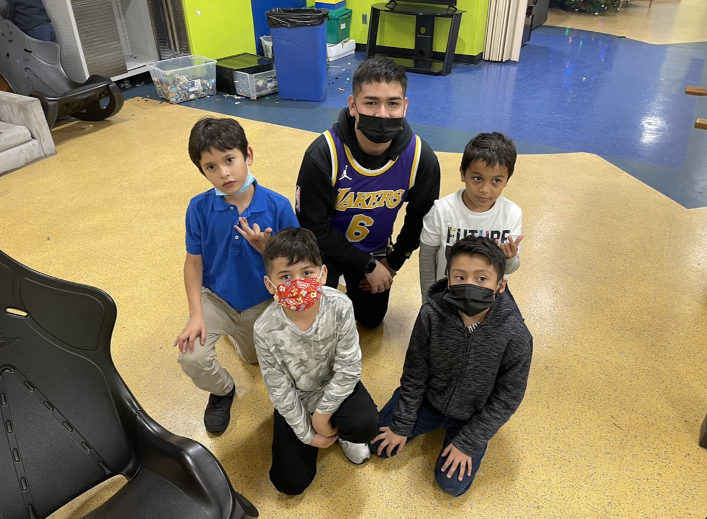
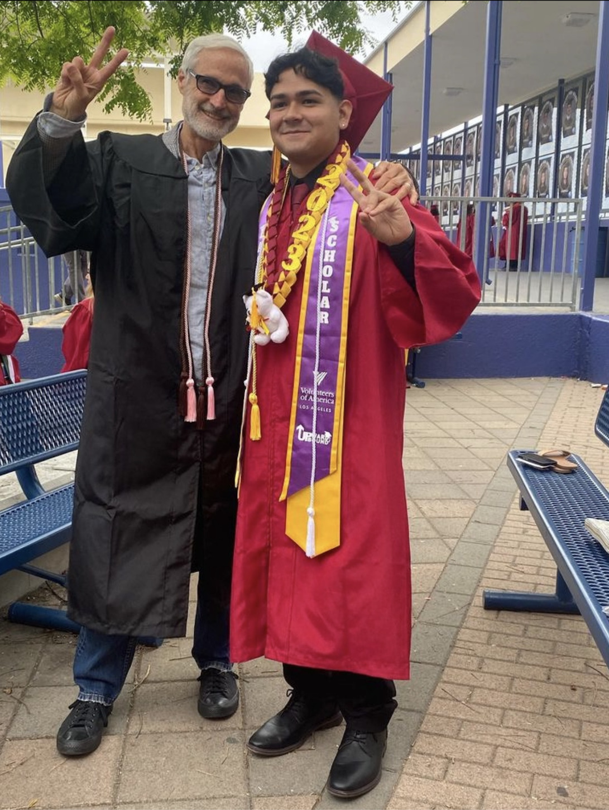
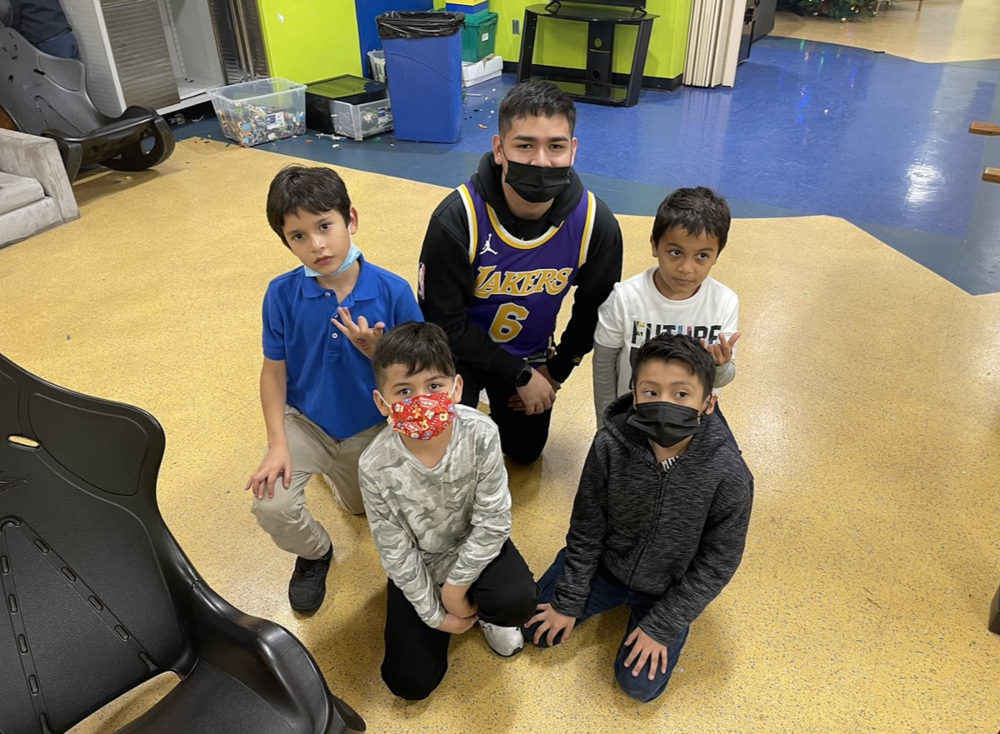
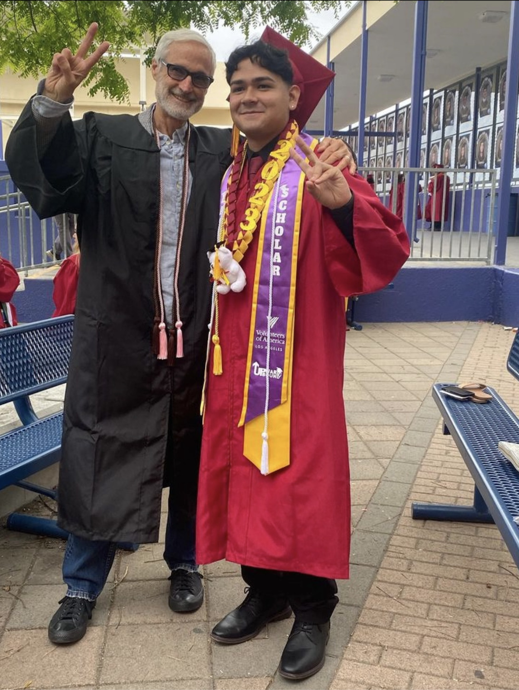

Andy Aguilar
Hello, my name is Andy Aguilar, and I am 18 years old. I am now attending the University of California Riverside. Recently, I found myself at the crossroads between academia and ambition, negotiating the difficult terrain of higher education at the University of California, Riverside. My journey thus far has been defined by a great enthusiasm for the pursuit of justice, a devotion that drives me toward my goal of becoming a public defender in the field of criminal law. The shift from high school to college was a daunting one, requiring not just academic flexibility but also a thorough reevaluation of personal responsibility. As a first-year student, I faced the challenges of university life, juggling newfound independence with a demanding academic environment. The hurdles were numerous, ranging from the confusing campus layout to the demanding academics, which required a degree of concentration that exceeded what I had encountered in high school. Navigating the academic landscape at UC Riverside has been a transformational experience. The hours spent in classrooms are only the top of the iceberg, as the pursuit of knowledge goes far beyond the bounds of planned lectures. Late evenings at the library, group study sessions, and a steadfast dedication to academic success have been the foundations of my college career. The experience, while difficult, has helped shape my character, instilling in me the tenacity needed to traverse the intricate web of collegiate problems.
Despite the academic difficulty, my love for criminal law has grown, driven by a deep sense of responsibility to address the pervasive concerns in my community. I grew up in Boyle Heights, a crime-ridden neighborhood, and I've seen firsthand the impact of structural injustices on the lives of people who are frequently caught up in the judicial system. The discrepancies and unfairness in my neighborhood have motivated me to advocate for individuals who are disadvantaged and underserved. This direct connection to my community's challenges has fueled my desire to become a public defender. The dream of being a voice for the voiceless, and protecting the rights of people who would otherwise be ignored by the legal system, drives me forward. I anticipate a future in which my legal knowledge and commitment to justice will combine to make a significant difference in the lives of those in most need. Looking ahead, I intend to apply to law school once I finish my undergraduate studies. The pursuit of a law degree marks the next stage of my journey, a stepping stone toward reaching my dream of making a good difference in the criminal justice system.
With a strong sense of accountability and a relentless commitment to advocacy, I'm driven to carve out a profession that both satisfies my objectives and profoundly improves society. I face the obstacles of college life with a clear objective in mind and a steadfast commitment to pursuing justice. The challenges I've encountered along the way have bolstered my resolve to alter the criminal justice system such that it offers opportunities for growth and education rather than creating obstacles.
Experience
Voulenteer
• Student voulenteer at the Salesian Boys and Girls Club
• Voulenteered at a food bank in Boyle Heights
• Experienced
Tutor
• Helped unerclassmen students with homework and or classwork
• Reviewed underclassmen work and gave feedback
• Etc.
Class Advisor
• Assisted in school events
• Represented my advisory class
• Assisted teachers and coordinators with agenda planning
• Helped mentor students
Education
UC Riverside
University of California Riverside
University of California Riverside
Portfolio




 